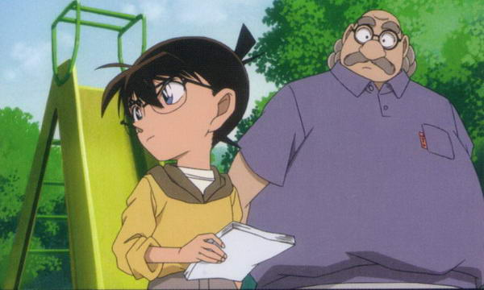

ใครคือยอดนักสืบจิ๋ว
เอโดงาวะ โคนัน เป็นนามแฝงของ คุโด้ ชินอิจิ ในตอนที่ร่างกายเขากลับมาเป็นเด็ก ซึ่งการเปลี่ยนแปลงนี้ได้เกิดขึ้นในขณะที่ออกเดทกับเพื่อนสมัยเด็กของเขา โมริ รัน เขาได้พบกับชายสองคนจากองค์กรลึกลับชายคนหนึ่งได้ป้อนยา APTX 4869 ที่ทำให้ร่างกายของเขาหดตัวกลับไปเป็นเด็กป.1 เมื่อฟื้นขึ้นมาเขาจึงใช้นามแฝงว่า เอโดงาวะ โคนัน เพื่อหลบซ่อนตัวตนที่แท้จริง พร้อมกับการวางแผนใช้ทักษะการเป็นนักสืบ เข้ามาอาศัยอยู่ในสำนักงานนักสืบของ โมริ โคโกโร่ ผู้เป็นพ่อของแฟนสาว โมริ รัน เพื่อใกล้ชิดกับการไขคดีปริศนาสืบหาความจริงที่เกิดขึ้น และเปิดโปงอาชญากรรมขององค์กร ในขณะเดียวกันเพื่อปกป้องตัวตนของเขา เขาถูกบังคับให้เข้าศึกษาในระดับประถมศึกษาปีที่ 1

เหตุการณ์ยอดนักสืบจิ๋ว
หลังมีข่าว คุโด้ ชินอิจิมีชีวิตอยู่ หลังหายสาปสูญไปนาน แพร่ไปทั่ว (โคนันกินยาคืนร่างชั่วคราว ไปทัศนศึกษากับโรงเรียน แต่พัวพันกับคดี) โชคดีที่พวกคนที่รู้ตัวจริงของโคนันช่วยปิดข่าวทัน ครอบครัวคุโด้จึงรวมตัวปรึกษากัน เรื่องเบาะแสของคนที่ถูก RUM ฆ่าก่อนตายทิ้งไว้ กับโค้ดของ RUM มาสลับกัน จนรู้ว่า บอส เกี่ยวข้องกับ คาราสุมะ เรนยะ (เศรษฐีที่มีอำนาจทางการเมืองที่สุดในญี่ปุ่นที่น่าจะตายไปแล้วในอดีต) พ่อแม่จึงคิดอยู่ญี่ปุ่นเพื่อคิดแผนหาทางช่วย FBI เพราะตอนนี้ช่วยหรือไม่ต้องตาย ซึ่งคือการยืนยันว่าถึงครึ่งเรื่องแล้ว
